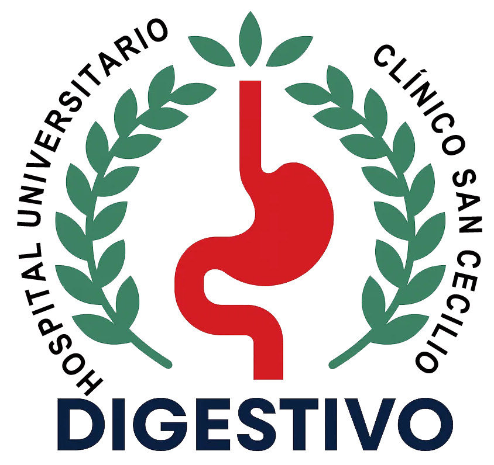
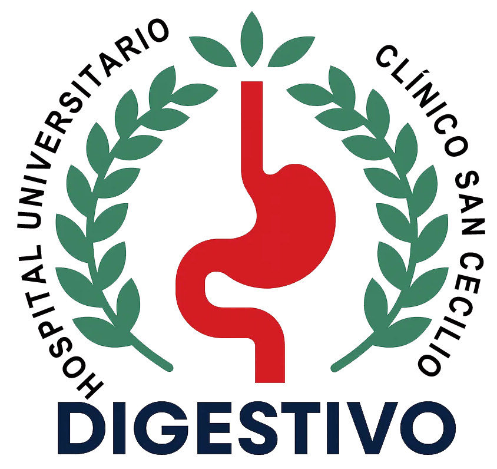

Una colonoscopia de calidad implica, como mínimo, lo siguiente:
- Preparación adecuada (Escala de Boston ≥ 2 en todos los segmentos).
- Intubación cecal (exploración completa) visualizando ostium y válvula.
- Tiempo de retirada mínimo de 6 minutos (ideal 10 m).
- El informe tiene que reflejar todas las lesiones detectadas, adecuadamente catalogadas, localizadas y medidas.
- Resección completa de todas las lesiones, especificando el método utilizado.
- Las lesiones no pediculadas ≥ 20 mm deben ser tatuadas para localizar el sitio en las revisiones.
- Recuperación de ≥ 90% de los pólipos resecados > 5 mm.
- Todos los pólipos deprimidos (0-IIc) y los LST deben evaluarse con cromoendoscopia convencional o virtual.
- Utilizar la clasificación de París para todas las lesiones.
- Dar recomendaciones de seguimiento al alta tras polipectomía a ≥ 95% de los pacientes.
Fuentes:
Performance measures for lower gastrointestinal endoscopy: a European Society of Gastrointestinal Endoscopy (ESGE) Quality Improvement Initiative. Endoscopy 2017
WEO Expert Working Group of Surveillance after colonic neoplasm. Colonoscopy quality requisites for selecting surveillance intervals: A World Endoscopy Organization Delphi Recommendation. Dig Endosc 2018
 
